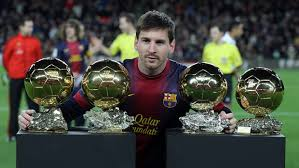
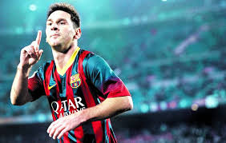
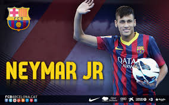
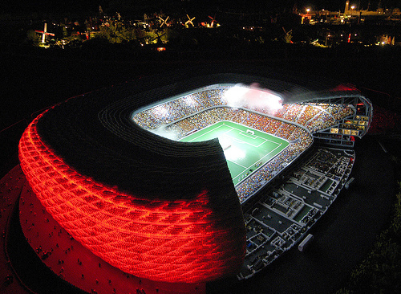
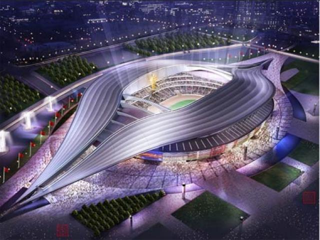
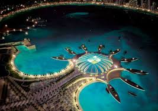

LOS MEJORES JUGADORES DEL MUNDO
ESTA ES UNA PAGINA DE AMOR
close
Nació el 5 de febrero de 1992 en Mogi das Cruzes, estado de São Paulo (Brasil)
Fue con la selección de Brasil en 2009 al Mundial de Fútbol Sub 17. Tras el Mundial de Sudáfrica, en 2010, le convocaron para jugar por primera vez con la selección absoluta. Debutó jugando contra Estados Unidos, y marcó un gol. Tuvo una gran actuación en el Sudamericano Sub 20 de Perú, celebrado a principios de 2011, siendo pichichi tras marcar 9 tantos. Brasil ganó el campeonato y se clasificó para participar en los Juegos Olímpicos de Londres 2012.
E mail
 Facebook
Facebook
Contenido

• Cristiano Ronaldo
3,790,134 seguidores en Google+
• Cristiano Ronaldo dos Santos Aveiro, GOIH, mejor conocido deportivamente como Cristiano Ronaldo, es un futbolista portugués que juega como extremo en el Real Madrid Club de Fútbol, de la Primera División de España. Wikipedia
• • Fecha de nacimiento: 5 de febrero de 1985 (edad 29), Santo António do Funchal, Portugal
• Salario: 21 millones EUR (2014)
• Hijos: Cristiano Ronaldo Jr.
• Equipos actuales: Real Madrid Club de Fútbol (#7 / Delantero),Selección de fútbol de Portugal (Delantero)
• Padres: Maria Dolores dos Santos Aveiro, José Dinis Aveiro
• Hermanos: Elma Aveiro, Hugo Aveiro, Liliana Catia Aveiro


• Cristiano Ronaldo
3,790,134 seguidores en Google+
• Cristiano Ronaldo dos Santos Aveiro, GOIH, mejor conocido deportivamente como Cristiano Ronaldo, es un futbolista portugués que juega como extremo en el Real Madrid Club de Fútbol, de la Primera División de España. Wikipedia
• • Fecha de nacimiento: 5 de febrero de 1985 (edad 29), Santo António do Funchal, Portugal
• Salario: 21 millones EUR (2014)
• Hijos: Cristiano Ronaldo Jr.
• Equipos actuales: Real Madrid Club de Fútbol (#7 / Delantero),Selección de fútbol de Portugal (Delantero)
• Padres: Maria Dolores dos Santos Aveiro, José Dinis Aveiro
• Hermanos: Elma Aveiro, Hugo Aveiro, Liliana Catia Aveiro

• Neymar
Futbolista
• Neymar da Silva Santos Júnior, mejor conocido como Neymar o Neymar Jr., es un futbolista brasileño. Juega como delantero y su actual equipo es el F. C. Barcelona, de la Primera División de España. Wikipedia
• • Fecha de nacimiento: 5 de febrero de 1992 (edad 22), Mogi das Cruzes, Estado de São Paulo, Brasil
• Estatura: 1,75 m
• Salario: 7 millones EUR (2014)
• Hijos: David Lucca da Silva Santos
• Padres: Nadine Santos, Neymar da Silva Sr
• Equipos actuales: Fútbol Club Barcelona (#11 / Delantero), Selección de fútbol de Brasil (Delantero)


Qatar. Decenas de empleados nepaleses han muerto en Qatar en las últimas semanas y miles son víctimas de abusos en el trabajo, según publicó en un reportaje el medio inglés “The Guardian”, que plantea las dudas sobre la forma en que es país se prepara para el Mundial de 2022 y denuncia que ya varios trabajadores han fallecido. Incluso proyecta que antes de que comience el torneo, podrían morir 4 mil personas por las terribles condiciones en las que se desempeñan.
En una investigación sobre la situación laboral en Qatar, titulada “Revelado: Los ‘esclavos’ de la Copa del Mundo de Qatar”, el medio dice que cada día un trabajador nepalés perdió la vida, en su mayoría jóvenes que sufrieron paros cardíacos.
Según los datos, los nepaleses, que forman el mayor grupo de trabajadores en Qatar, enfrentan situaciones de explotación y abusos similares a lo que hoy se considera esclavitud, según la definición de la Organización Internacional del Trabajo (OIT).

De acuerdo con unos documentos obtenidos por “The Guardian” de la embajada nepalesa en Doha, al menos 44 trabajadores murieron entre el 4 de junio y el 8 de agosto de este año. La mitad sufrió ataques cardíacos o accidentes en el lugar de trabajo.
Entre otras cosas, hay denuncias de que algunos nepaleses afirmaron no haber recibido su sueldo correspondiente a varios meses, a otros se les confiscó el pasaporte y se les denegó agua en medio del intenso calor del verano, mientras que unos 30 buscaron refugio en su embajada en Doha para escapar de las condiciones brutales en que estaban trabajando.
“Nos gustaría marcharnos, pero la compañía no nos deja”, dijo un nepalés empleado en Lusail City, una ciudad que se construye y que incluirá un estadio para 90.000 personas que albergará la final del Mundial de Fútbol.
El organismo encargado de organizar el evento deportivo, el llamado Comité Supremo 2022, informó a “The Guardian” que aún no han empezado los proyectos directamente relacionados con el mundial.
No obstante, el organismo admitió estar “profundamente preocupado” por estas denuncias contra ciertas empresas constructoras que trabajan en Lusail City.

¡POR TI LO HAGO VIDA MIA ¡